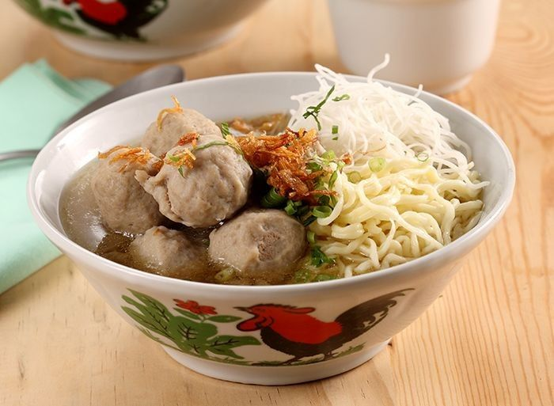

Menu Resep Kuliner
😔 Maaf, resep masakan tidak ditemukan...

Kuah Hangat
Bakso
Bakso sapi kenyal dengan siraman kuah kaldu sapi gurih beraroma bawang putih goreng.

Mie Ayam
Mie Pangsit
Mie kenyal dengan topping ayam bumbu kecap manis gurih, disajikan bersama pangsit renyah.
Khas Medan
Nasi goreng teri medan
Nasi goreng gurih tanpa kecap manis yang dipadukan garingnya teri medan asin renyah.

Menu Sehat
Salad
Mangkuk sayur segar pilihan kaya nutrisi dilengkapi dengan telur rebus dan ayam panggang.
Oriental
Sayur Capcay
Aneka ragam sayur segar yang ditumis matang dengan tambahan udang dan bakso sapi.